Informs whether prompt/agent optimization tooling like GEPA and managed-variable (feature-flag-style) prompt deployment is worth adopting for a given task
The optimization loop moves a prompt from hand-written baselines through GEPA's genetic search to a higher-scoring but riskier candidate, which the speaker's Shopify example suggests pays off most at large data volumes (ours).
“it's a genetic algorithm in the sense that it looks for the best um value of some kind”
said at 02:06“we can basically define what percentage of calls are using which of our different values. So this is very much like uh AB testing”
said at 61:19“accuracy being kind of the most important one here, slightly higher, 92% versus 87% for the like expert prompt versus the initial prompt”
said at 26:49“cuz the LLM as a judge is effectively the kind of you know I don't know if it's politically acceptable, but the kind of lunatics running the asylum”
said at 18:23“It has achieved a performance score of 96 uh {point} 7% so, significantly above the 92 we got from our like best case before”
said at 45:08“it got wrong ons and uncles. So the final prompt excludes explicitly ons and uncles even though they are in the golden relation”
said at 50:52“the statistic is that 98% of data is private. I don't know if that number is is correct or not”
said at 42:00“tens of thousands of dollars to go and fine-tune a model and actually for the most part improve the harness, wait for the next model, like show a nicer loading icon to your users is probably better than fine-tuning”
said at 56:38“they got the price down from $5 million a year to 60 60 $73,000 a year”
said at 30:31“If you go and ask Boris Chen how does he work on uh Claude code, he says mostly vibes”
said at 53:28The aunt/uncle overfitting anecdote is the most transferable finding here: it's a concrete, reproducible failure mode (optimizer narrows behavior to fit an under-sampled training subset) rather than a hypothetical caveat, and argues for holding out a genuinely separate, full-coverage evaluation set before trusting an optimized prompt (ours).
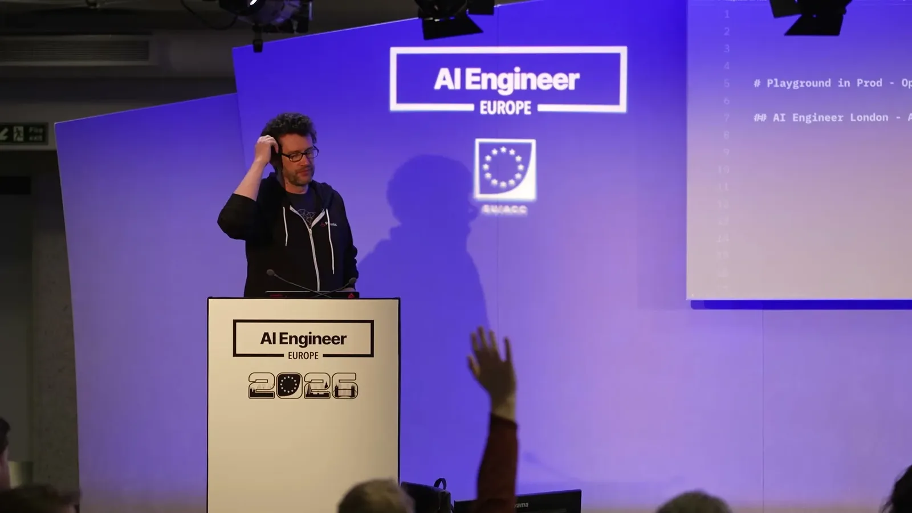
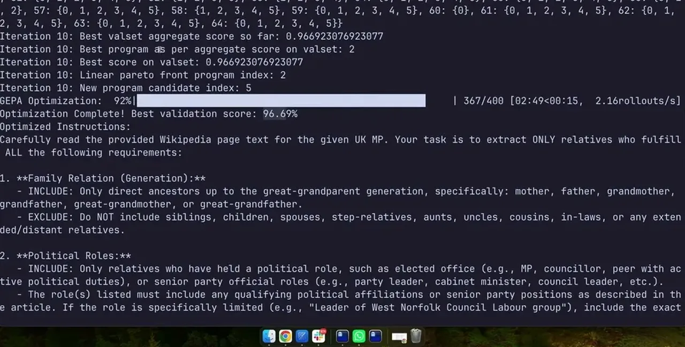
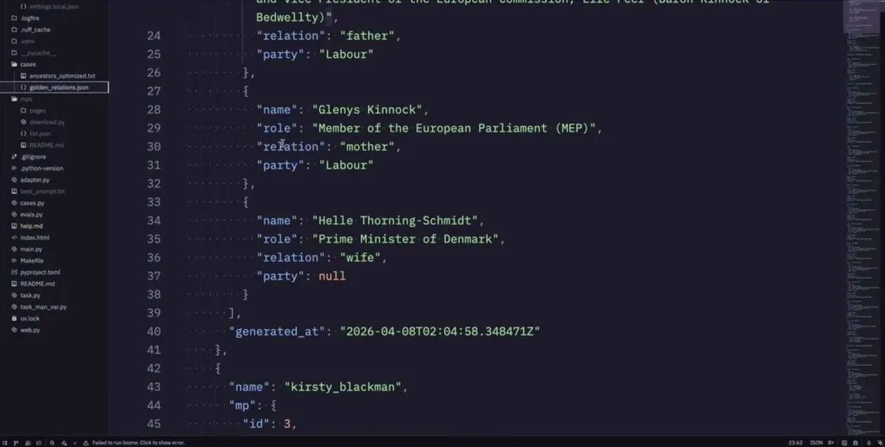
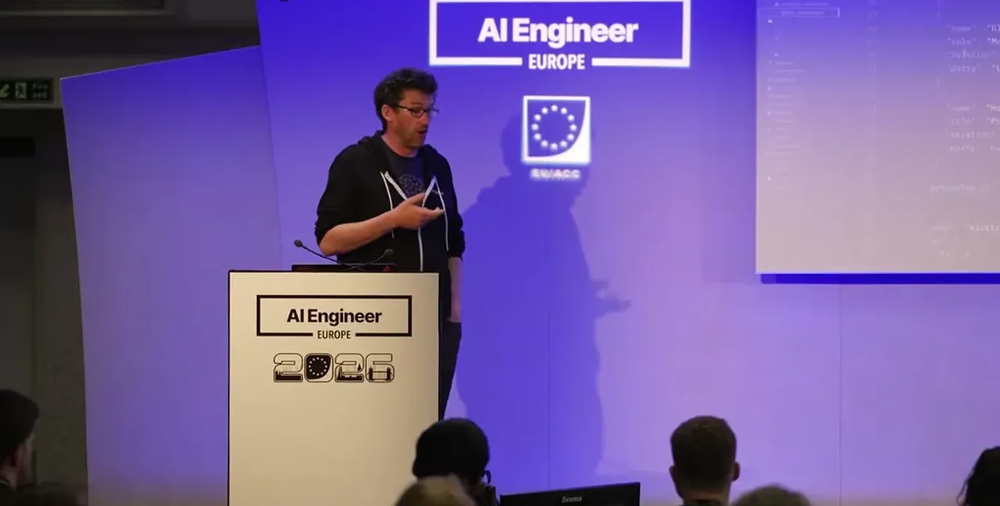
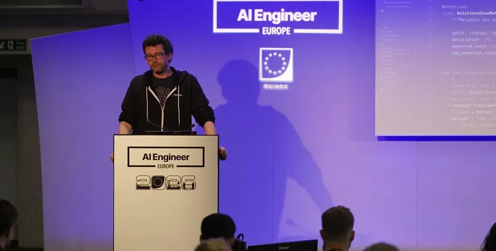
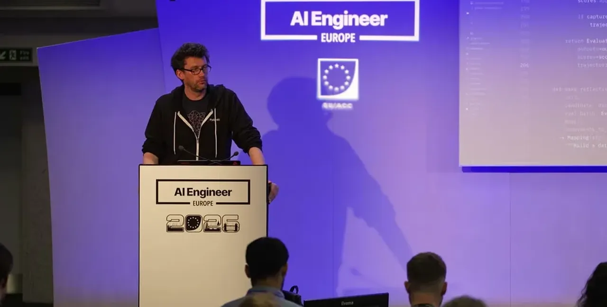
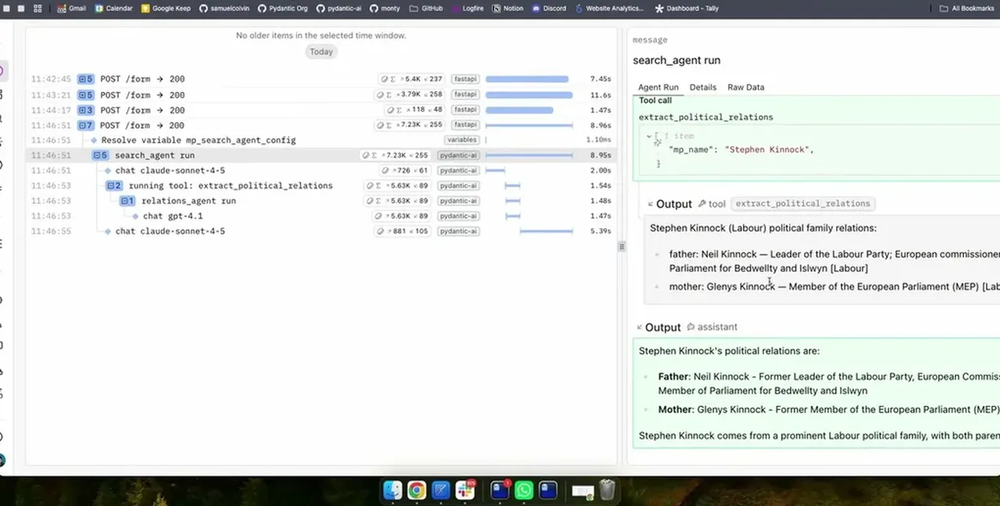
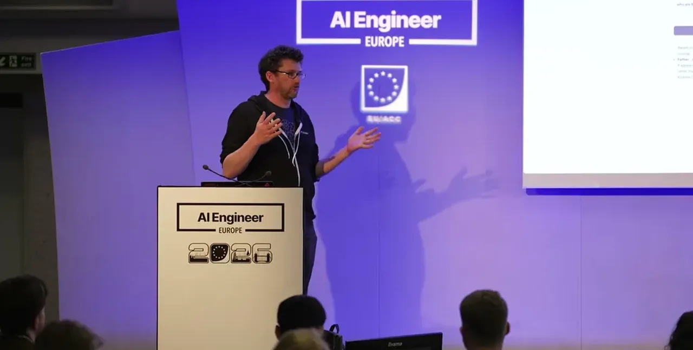
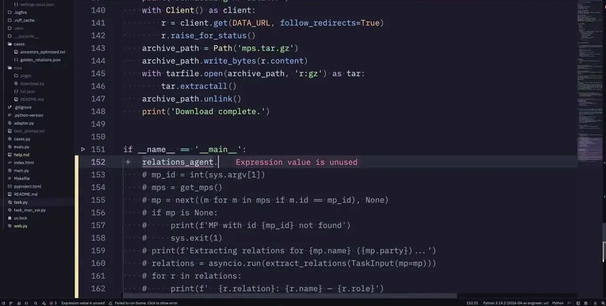
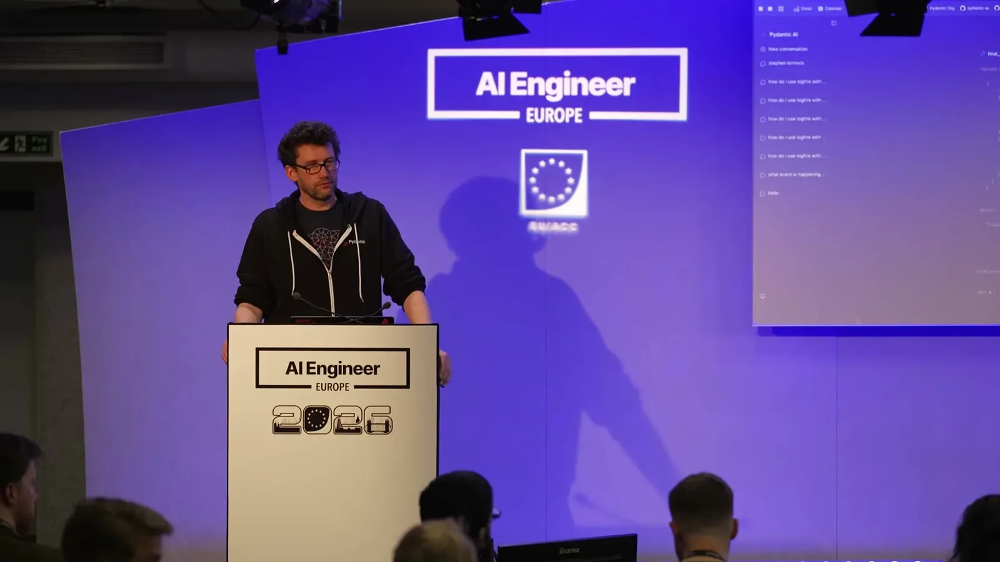
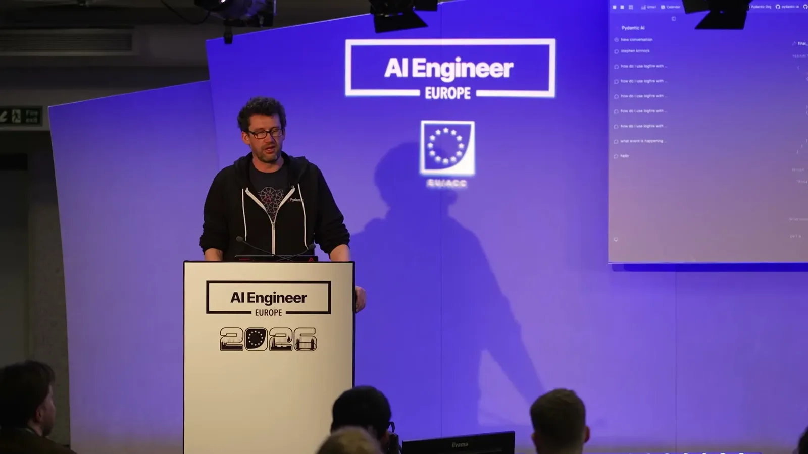
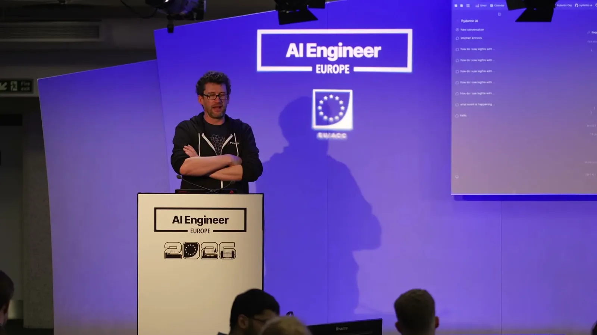
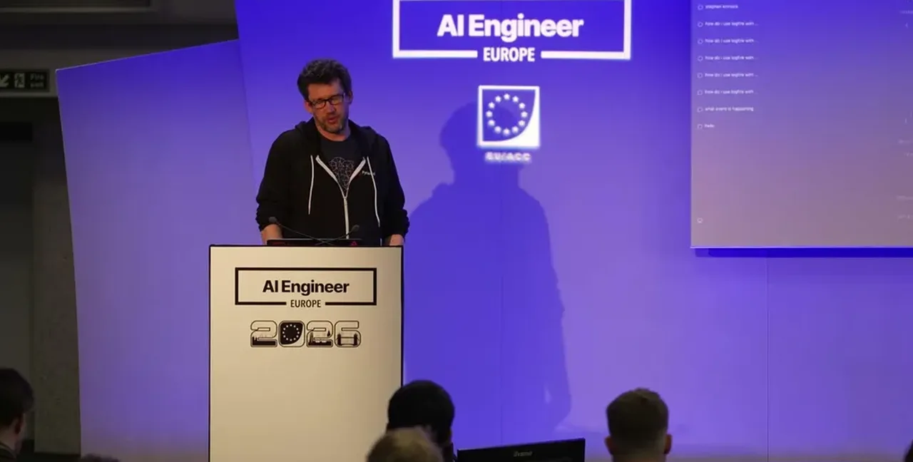
| Stance | Claim | t |
|---|---|---|
| asserts | GEPA is a genetic algorithm that searches for the best value (a prompt or JSON string) and recombines good candidates to produce new ones. | 02:06 |
| asserts | A cited Shopify example switching to a Qwen agent optimized with GEPA cut cost from $5 million a year to $73,000 a year. | 30:31 |
| asserts | A hand-written detailed prompt scored 92% accuracy versus 87% for a simple one-line prompt on the same eval set. | 26:49 |
| asserts | The GEPA-optimized prompt achieved a 96.7% performance score, significantly above the 92% best prior case, at the cost of a more verbose prompt. | 45:08 |
| recommends | Defining custom deterministic evaluators is generally better than relying on LLM-as-judge, which can itself behave unreliably. | 18:23 |
| asserts | A cited (uncertain) statistic holds that 98% of data is private, which the speaker uses to argue optimization matters more for large proprietary data sets. | 42:00 |
| asserts | Big model labs generally advise against fine-tuning because it costs tens of thousands of dollars and the gains are often superseded by waiting for the next model release. | 56:38 |
| warns | An audience member found their GEPA-optimized prompt explicitly excluded aunts and uncles despite them being in the golden relations data, which the speaker attributes to overfitting on an under-sampled training subset. | 50:52 |
| asserts | Coding agent companies reportedly run few or no formal evals; Claude Code's own team is said to tune behavior mostly by feel. | 53:28 |
| asserts | Managed variables support targeting a percentage of calls to a new value, functioning like A/B testing, built on the OpenFeature standard. | 61:19 |
Machine-readable copy embedded in this page (script#ontology) and in the corpus ontology.